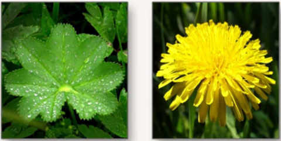
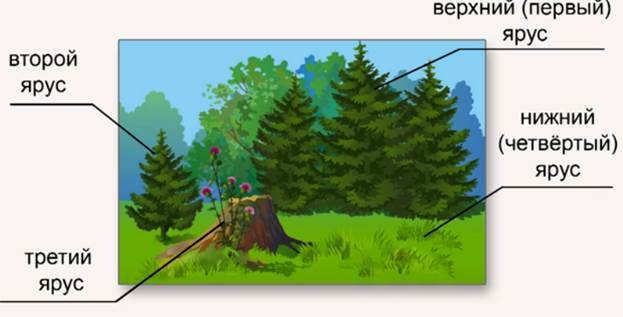

Растительное сообщество
Растительное сообщество – это группа взаимосвязанных между собой растений разных видов, которые длительное время произрастают на определенной территории с постоянными условиями окружающей среды.
Это могут быть и большие древесные растения (Рис. 1), и маленькие луговые (Рис. 2).

Рис. 1. Лесное растительное сообщество: ель и сосна

Рис. 2. Луговое растительное сообщество: манжетка и одуванчик
Все растения растительного сообщества приспособлены к особым условиям совместной жизни, сложившимся в этом сообществе. Каждое растительное сообщество расположено на однородной территории, почва которой, влажность, освещенность, температура и другие условия жизни отличаются от условий жизни другого сообщества. Сосновые леса обычно растут на песчаных почвах, бедных перегноем. И хотя кроны сосен пропускают достаточно света, кустарников и травянистых растений в них мало. На влажных почвах в таких лесах преобладают мхи, на сухих – лишайники (ягель) и некоторые сухолюбивые травы. Растительное сообщество лубового леса, как правило, приурочено к почве, богатой минеральными веществами. Из деревьев здесь растут дуб, липа, клен, вяз, рябина, ясень, из кустарников – орешник (лещина), жимолость лесная, бересклет. Почву покрывает зеленый ковер из лесных трав с крупными зелеными листьями.
Живые организмы приспособлены не просто к совместному существованию, они приспособлены к совместной жизни на определенной территории. По научному это называется биогеоценоз – совокупность организмов, приспособленных к совместному существованию на определенной территории.
Место обитания и влияние организмов друг на друга
Именно место обитания считается наиболее важным в совместной жизни организмов, а в условиях обитания – климат. Самое главное свойство климата – насколько он влажный и теплый, так растения в пустыне приспособлены к сухому и жаркому климату, а озерные растения приспособлены к недостатку кислорода в водной среде. Много зависит от почвы, которая тоже зависит от климата. Растения в сообществе стараются выжить, заглушить своих соседей, между ними происходит напряженное соперничество. В каждом растительном сообществе существуют растения, сильнее всего влияющие на окружающую территорию. Так, в еловом лесу господствует ель. Она создает сильное затенение и истощает почву разветвленной поверхностной корневой системой. Поэтому в еловом лесу особый световой и температурный режим, а в почве мало минеральных веществ, необходимых для травянистых растений. Примером может служить лесное растительное сообщество, похожее на многоэтажный дом: растения вырастают на разную высоту, каждое имеет свой этаж. Ученые называют эти этажи – ярусами, а само явление – ярусностью. Она бывает не только в лесу, но и на лугу и в озере. Самые высокие деревья составляют верхний ярус, под ними находятся кустарники и небольшие деревца, создающие второй ярус. Еще ниже располагается третий ярус – ярус трав, практически у самой земли находится нижний ярус – ярус мхов и низких трав с ползучими стеблями (Рис. 3).

Рис. 3. Ярусность в растительном сообществе
Под землей тоже можно увидеть ярусы, потому что и там сохраняются отношения борьбы корней разных растений, ведь они прорастают на разные глубины и поглощают там воду и минеральные соли. Конкуренция идет не только за свет, воду и минеральные вещества между растениями, они могут и напрямую вредить друг другу. Ведь некоторые из них способны выделять вещества, которые угнетают и затормаживают рост соседей, а во время ветра большие деревья своими ветками травмируют их, вредя таким способом. Некоторые из растений изменяют почву, например, в еловом лесу хвоя настолько меняет почву под елями, что на ней мало кто может выжить. Получается, что в растительном сообществе все необыкновенно связано – ведь формировался биогеоценоз тысячелетиями, и вмешательство человека нарушает эти связи, даже небольшие изменения имеют существенное влияние. Вырубка лесов и установка плотин на долгие десятилетия изменяет биогеоценоз, это не всегда бывает к лучшему.
Заключение
Мы рассмотрели, что такое растительное сообщество, его особенности, среду обитания, ярусность. В дополнении к уроку вы можете узнать о растительных сообществах леса, луга и озера.
Список литературы
1. Пасечник В.В. Биология 6 класс. Бактерии, грибы, растения. – Дрофа, 2011.
2. Корчагина В.А. Биология 6-7 классы. Растения, бактерии, грибы, лишайники. – 1993.
3. Пономарева И.Н., Корнилова О.А., Кучменко В.С. Биология 6 класс. – 2008.
Дополнительные рекомендованные ссылки на ресурсы сети Интернет
1. Интернет портал «Биофайл» (Источник)
2. Интернет портал «FB.ru» (Источник)
3. Интернет портал «Все для подготовки к ЕНТ» (Источник)
Домашнее задание
1. Что такое биогеоценоз?
2. Что считается наиболее важным в совместной жизни организмов?
3. Где происходит явление ярусности?